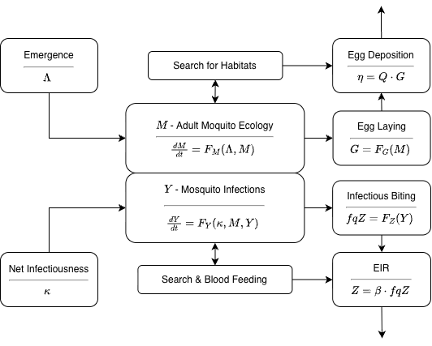

The MY Component
Models for Adult Mosquito Ecology and Infection Dynamics
Source:vignettes/MY-interface.Rmd
MY-interface.RmdThe MY component was designed to model adult mosquito ecology and infection dynamics.
This vignette takes a deep dive into the design and structure of the MY component. It is useful for anyone who wants to learn more about how the code works.
Overview
The MY component includes processes related to adult mosquito ecology and infection dynamics. M describes the adult mosquito population, and Y denotes state variables for pathogen infection dynamics within that population. The state variables and equations depend on the model.
The Y component interacts with X through blood feeding and transmission:
Infection models use net infectiousness, or \(\kappa,\) the probability that a mosquito becomes infected after blood feeding on a human.
Each module supplies
F_fqZ, which computes the daily density of infectious mosquito bites on humans in each patch. The transmission interface uses this quantity to compute EIR for the human strata.Modules also supply
F_fqM, the daily density of mosquito bites on humans in each patch. The transmission interface uses it to compute HBR for the human strata.
The M component interacts with L through egg laying and emergence.
The M component is developed around the net emergence rate of adult mosquitoes, or \(\Lambda.\)
Each module supplies
F_eggs, which computes the number of eggs produced by adult mosquitoes in each patch. The egg-laying interface apportions those eggs among the habitats in a patch.dMYdtcomputes derivatives for continuous-time models. Discrete-time models can instead implementUpdate_MYtto update the state variables.

Two important issues for MY components are adult mosquito demography, including mortality and dispersal and the method for handling mosquito bionomics as a baseline that is modified by control.
Mosquito Demography
The SI module represents mosquito mortality and dispersal with the matrix \(\Omega\) and computes survival and dispersal through the EIP with \(\Upsilon = e^{-\Omega \tau}\).
For SI, the matrix is \[\Omega = \operatorname{diag}(g + \sigma\mu) - K\operatorname{diag}(\sigma(1-\mu)),\] where \(g\) is the mortality rate, \(\sigma\) is the emigration rate, \(\mu\) is the fraction lost during emigration, and \(K\) describes dispersal. Other model families may use different demographic structures.
Mosquito Bionomics
Mosquito bionomics must accommodate baseline parameters that can vary
with time or environmental conditions and can be modified by vector
control. The MBionomics and MEffectSizes
methods update these values for adult mosquitoes. The broader design is
described in the Bionomics vignette.
Required Functions
There is no fixed number of functions that every MY module must implement. The methods required depend on whether the model is continuous-time or discrete-time and on the capabilities the module supports.
Some of these required functions are S3 class functions
in adult-MY-interface.R. Others are defined for each
module.
One good example is the SI module, posted in the
ramp.xds github repository adult-MY-SI.R.
The methods cover model setup, dynamics, bionomics, state variables and initial values, parameter access, parsed outputs, and consistency checks. A module can also implement optional methods such as steady-state calculations when those are supported.
Each module is identified by a class name, generically called
MYname (for example, SI). Methods dispatch on
the class of xds_obj$MY_obj[[s]], where s is
the vector-species index. MY method signatures use s
consistently.
Dynamics
At least one of the following is required, depending on whether the model family is a system of differential equations or a discrete time system:
+ `dMYdt.MYname` :: implement this method for a continuous-time model. It receives `t`, the dependent-variable vector `y`, `xds_obj`, and `s`; it returns derivatives in the same order as the model's state variables. The function is used with solvers such as `deSolve::ode` or `deSolve::dede`.
+ `Update_MYt.MYname` :: implement this method for a discrete-time model. It receives `t`, `y`, `xds_obj`, and `s`, and returns the updated state variables in the model's state-variable order.Bionomics
Two methods update bionomic parameter values before the dynamics are computed.
MBionomics.MYname– evaluates the baseline bionomic parameter functions for the current time and resets the effect sizes to 1.MEffectSizes.MYname– applies vector control effect sizes to the bionomic parameters set byMBionomics.
Both methods receive t, y,
xds_obj, and s, and return the updated
xds_obj.
MY Model Object
Each module defines a constructor and setup method for its
MY model object. The constructor returns a list with
the module’s class; the setup method stores it at
xds_obj$MY_obj[[s]] and prepares its initial values and
shared interfaces.
-
make_MY_obj_MYname:: returns the module-specific MY object. It typically contains:bionomic parameter values or bionomic parameter objects. In most models, the value of baseline bionomic parameters are functions of time, or exogenous variables that vary with time.
class(MY_obj)=MYnamethe indices for the model variables, stored as
MY_obj$ixthe initial values are stored as
MY_obj$initsanything else that is needed can be configured here
setup_MY_obj.MYnamecalls the constructor and stores the object for vector speciessatxds_obj$MY_obj[[s]]. It also prepares initial values and any shared interfaces needed by the module.
Parameters
change_MY_pars.MYnamechanges supported parameter values after setup. New values are passed by name inoptions.get_MY_pars.MYnamereturns the stored parameter values for inspection.
Variables
setup_MY_ix.MYname sets up indices for the model’s state
variables. get_MY_ix retrieves the stored indices.
Two other methods use those indices: get_MY_vars.MYname
retrieves state values from the dependent-variable vector \(y\), and
parse_MY_orbits.MYname retrieves state values from solver
output.
- Both methods return named lists. The parsed output can also include derived quantities specific to the model.
Initial Values
A set of functions sets up or changes the initial values for the state variables.
make_MY_inits_MYname- returns a named list of default initial values for all state variables. Values can be overridden throughoptions.setup_MY_inits.MYname- calls the initial-value constructor and stores the values atxds_obj$MY_obj[[s]]$inits.get_MY_initsandchange_MY_inits.MYname- inspect and change the stored initial values.change_MY_inits.MYname- a utility to change the initial values.
Dynamical Terms
These methods compute quantities used by other component interfaces. Each returns a vector with one value per patch.
F_fqZ.MYname- returns the daily density of infectious mosquito bites on humans in each patch. The transmission interface uses it to compute EIR by human stratum.F_fqM.MYname- returns the daily density of mosquito bites on humans in each patch. The transmission interface uses it to compute HBR by human stratum.F_eggs.MYname- returns daily egg production by adult mosquitoes in each patch. The egg-laying interface distributes the eggs among habitats.
Standard Outputs
parse_MY_orbits.MYname parses the model’s state
variables and any model-specific derived quantities from the solver
output. During output processing, ramp.xds also records
fqZ, fqM, egg production G,
emergence Lambda, and net infectiousness
kappa. The transmission interface uses fqZ and
fqM with the biting-distribution matrix to compute EIR and
HBR, respectively.
Optional Functions
Optional methods should be implemented only when they are meaningful for the model. Record supported capabilities and limitations in the skill set.
Steady States
The interface provides optional methods for steady states under static parameter values.
steady_state_M.MYname:: pass the emergence rate of adult mosquitoes and compute steady states for the M component.steady_state_MY.MYname:: pass the emergence rate of adult mosquitoes and net infectiousness, and compute the steady states for the MY component.steady_state_Y.MYname:: pass adult mosquito population density and net infectiousness, and compute the steady states for the Y component.